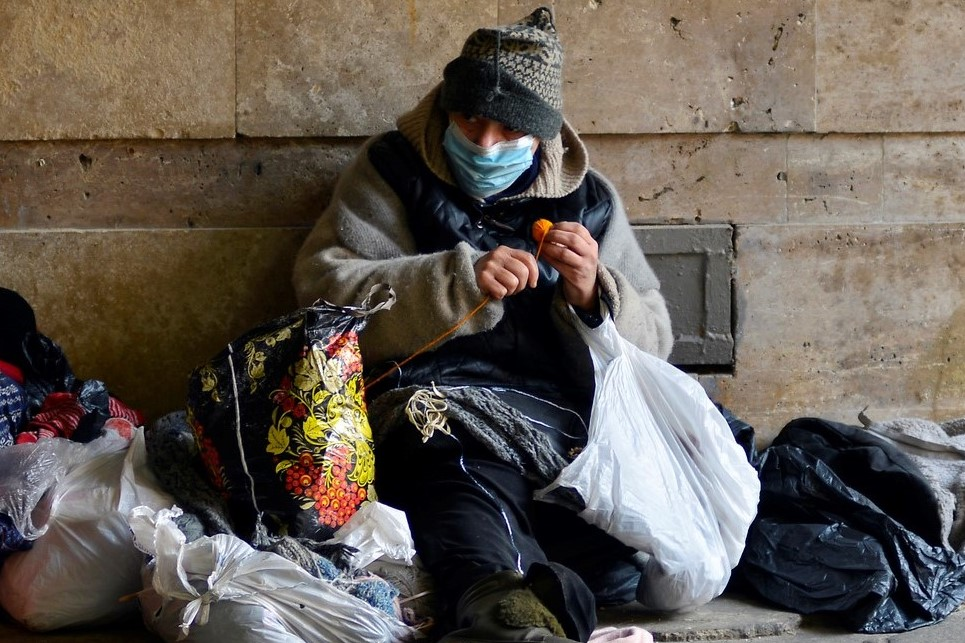

Poverty and Homelessness


Poverty
The word poverty comes from a latin word pauper, meaning poor. So poverty can be defined as state of being extremely poor. We genrally think that being poor means not having enough money to buy the necessary. But if we look at the broader aspect poverty can mean many things. Like it could also mean mental poverty/illness.
Mental Poverty
So you might be wondering why I compared Mental illness with poverty.For this we have to first look at the defination of mental illness. mental health disorders, refers to a wide range of mental health conditions — disorders that affect your mood, thinking and behavior. Examples of mental illness include depression, anxiety disorders, schizophrenia, eating disorders and addictive behaviors. Many people have mental health concerns from time to time. But a mental health concern becomes a mental illness when ongoing signs and symptoms cause frequent stress and affect your ability to function.
Let's be honest guys most of us face mental illness from time to time although it is minor so we get recovered from it quickly. I am a student and I can tell thousands of points on how students face mental illness. Try to releate things given below may help you in understanding the problem and you may be able to cure your problem.